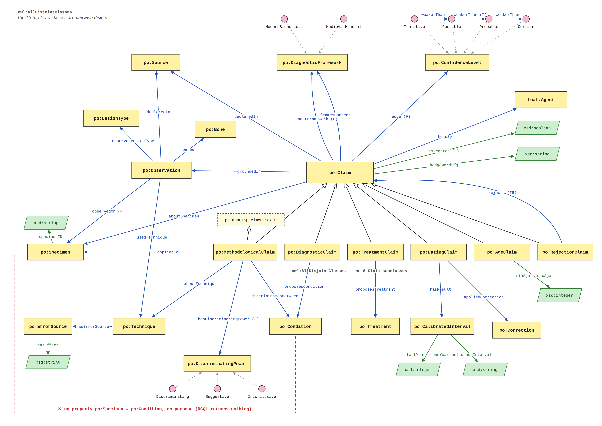
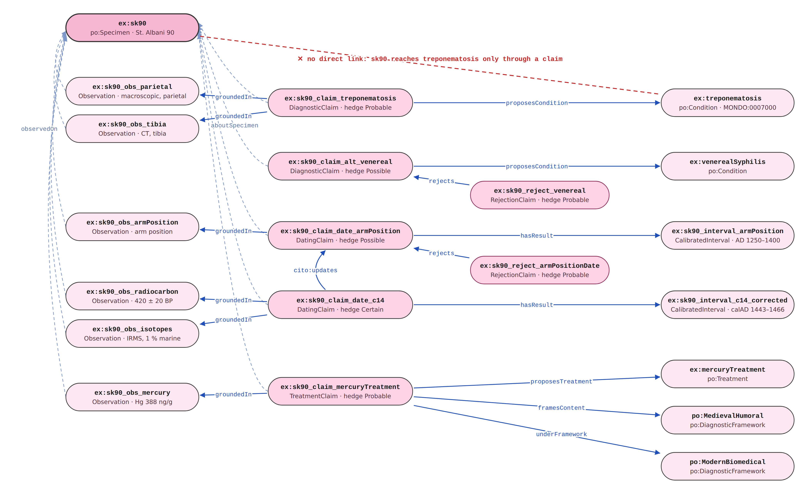

PaleONT: an ontology of palaeopathological claims
Release: 2026-09-27
- Latest version:
- https://w3id.org/paleont/
- Authors:
- Samuele Bartelli, Gaurav Gautam, Mayank Nautiyal
- Publisher:
- University of Bologna, DHDK: Knowledge Representation and Extraction
- Extended Ontologies:
- FOAF
- CiTO
- Source:
- https://doi.org/10.1186/2050-7445-1-19
- Download serialization:
-


- License:
-


- Cite as:
- Samuele, Gaurav, Mayank, A. (2026). PaleONT: an ontology of palaeopathological claims https://w3id.org/paleont/
Abstract
PaleONT models the epistemic structure of palaeopathological reporting: what was observed on human skeletal remains, which claims were grounded in those observations, who made them, from which framework, and with what confidence.Introduction back to ToC
Palaeopathology papers rarely say that a person had a disease. They say that lesions are consistent with it, that a diagnosis cannot be excluded, that one method points one way and another method points elsewhere. When these findings are copied into a database, the hedging usually disappears: the record ends up saying "skeleton 90: syphilis".
PaleONT is built to keep that hedging. It records who claimed what, about which skeleton, on what evidence, from which point of view, and how sure they said they were. The graph never states as fact that an individual was ill. It only records claims.
The ontology was developed for the Knowledge Representation and Extraction course of the Digital Humanities and Digital Knowledge (DHDK) master's programme at the University of Bologna. It is tested on one article: Schwarz, Skytte & Rasmussen (2013), Pre-Columbian treponemal infection in Denmark? A paleopathological and archaeometric approach, which examines five medieval Danish skeletons. The scope is a proof of existence, not a census: every kind of claim the article's argument needs is modelled at least once.
PaleONT reuses existing vocabularies wherever one fits:
-
FOAF for the agents who hold claims
(
foaf:Agent,foaf:Person,foaf:Organization); -
CiTO for relations between claims
(
cito:agreesWith,cito:disagreesWith,cito:updates); - SKOS mapping properties to align bones with UBERON and conditions with MONDO, instead of using those classes directly as values (which would require punning);
- Dublin Core Terms for metadata.
Namespace declarations
| cito | <http://purl.org/spar/cito/> |
| dcterms | <http://purl.org/dc/terms/> |
| foaf | <http://xmlns.com/foaf/0.1/> |
| owl | <http://www.w3.org/2002/07/owl#> |
| po | <https://w3id.org/paleont/> |
| rdf | <http://www.w3.org/1999/02/22-rdf-syntax-ns#> |
| rdfs | <http://www.w3.org/2000/01/rdf-schema#> |
| skos | <http://www.w3.org/2004/02/skos/core#> |
| xml | <http://www.w3.org/XML/1998/namespace> |
| xsd | <http://www.w3.org/2001/XMLSchema#> |
PaleONT: Overview back to ToC
This ontology has the following classes and properties.Classes
- Age claim
- Bone
- Calibrated interval
- Claim
- Condition
- Confidence level
- Correction
- Dating claim
- Diagnostic claim
- Diagnostic framework
- Discriminating power
- Error source
- Lesion type
- Methodological claim
- Observation
- Rejection claim
- Source
- Specimen
- Technique
- Treatment
- Treatment claim
Object Properties
- about specimen
- about technique
- agrees With
- applied correction
- applied to
- declared in
- disagrees With
- discriminates between
- engages with
- frames content
- grounded in
- has discriminating power
- has error source
- has result
- hedge
- held by
- observed on
- observes lesion type
- on bone
- proposes
- proposes condition
- proposes treatment
- rejects
- under framework
- updates
- used technique
- weaker than
Data Properties
- confidence interval
- end year
- has effect
- hedge wording
- is negated
- maximum age
- minimum age
- specimen ID
- start year
Annotation Properties
Named Individuals
PaleONT: Description back to ToC
The central commitment
There is
no property whose domain is po:Specimen and whose
range is po:Condition. The only way from a skeleton to a disease goes through a
po:DiagnosticClaim, and every claim has an agent
(po:heldBy), a framework
(po:underFramework) and a hedge
(po:hedge).

rdfs:subClassOf. The red dashed line marks the link
that is deliberately absent. (F) functional, (T) transitive, (IR)
irreflexive.
Four layers
The model reads from left to right, from what was seen to what was said about what was said.
| Layer | What it holds | Main terms |
|---|---|---|
| 0 · Evidence | Acts of examination: which lesion type, on which bone, with which technique, on which specimen. |
po:Observation, po:observedOn,
po:observesLesionType, po:onBone,
po:usedTechnique
|
| 1 · Interpretation | Claims grounded in observations: a diagnosis, a date, an age, a treatment. Each proposes something. |
po:groundedIn, po:proposes and its
sub-properties po:proposesCondition,
po:proposesTreatment, po:hasResult
|
| 2 · Meta | Claims about what a technique can or cannot establish. |
po:MethodologicalClaim,
po:aboutTechnique,
po:discriminatesBetween,
po:hasDiscriminatingPower,
po:appliedTo
|
| 3 · Adjudication | Claims about other claims: rejecting, agreeing, disagreeing, superseding. |
po:engagesWith and its sub-properties
po:rejects, cito:agreesWith,
cito:disagreesWith, cito:updates
|
Two super-properties, po:proposes and
po:engagesWith, are never asserted directly: they are
inferred from their sub-properties, so that everything a claim puts
forward, or every claim it responds to, can be reached through one
term.
Six kinds of claim
All six are subclasses of po:Claim, pairwise disjoint,
and inherit po:aboutSpecimen,
po:groundedIn, po:heldBy,
po:underFramework, po:framesContent,
po:hedge, po:hedgeWording,
po:isNegated and po:declaredIn.
| Class | Proposes | Note |
|---|---|---|
po:DiagnosticClaim |
a po:Condition |
The only route from a specimen to a disease. |
po:TreatmentClaim |
a po:Treatment |
e.g. treatment with Hg-containing medicine, inferred from bone mercury levels. |
po:DatingClaim |
a po:CalibratedInterval |
May carry a po:Correction, such as a marine
reservoir correction.
|
po:AgeClaim |
an age range (po:minAge, po:maxAge)
|
Age at death is a claim, not a property of the skeleton. |
po:RejectionClaim |
rejects another po:Claim |
The range of po:rejects is po:Claim,
not po:Condition: one rejects an assertion, not a
disease.
|
po:MethodologicalClaim |
a judgement about a po:Technique |
Restricted to po:aboutSpecimen max 0: it is never
about a skeleton.
|
Design decisions
| ID | Decision | Why |
|---|---|---|
| D1 |
po:groundedIn has range
po:Observation.
|
It is the boundary between evidence and interpretation. Whether it should widen to allow a claim to be grounded in another claim is left open. |
| D2 |
po:usedTechnique has domain
po:Observation, not po:Claim.
|
Every use of a technique is an observation. A dating claim
reaches its technique through
groundedIn / usedTechnique.
|
| D3 |
The locally coined po:redetermines was withdrawn in
favour of cito:updates.
|
CiTO already defines "provides updated information superseding
the cited entity", and declares no domain or range, so it can
link claims. po:rejects stays local: refusing a
claim is a different act from citing it.
|
| D4 |
po:underFramework (functional) is split from
po:framesContent (not functional).
|
A modern paper saying someone was treated with mercury makes a modern claim whose content belongs to medieval humoral medicine. One property could not say both without equivocating. |
| D5 |
po:appliedTo links a methodological claim to the
specimens where the judgement was reached.
|
"CT cannot separate the treponematoses" is about CT, not about
skeleton 90; po:appliedTo records where it was
found out without making it about the skeleton.
|
| D6 |
po:isNegated (boolean, functional) marks a claim
that denies its content.
|
The source says some individuals were not exposed to mercury. Without negation the model could record only assertions. Absence of the property means affirmative, so a claim without it is read as an assertion. |
| D7 |
po:confidenceInterval records the statistical level
of each interval.
|
A calibrated radiocarbon range is a hedged estimate, not a fact with hard edges. Recording its confidence level keeps two intervals from being compared as if their bounds were exact. |
Axioms written to be checked
-
Disjointness. The 15 top level classes are
pairwise disjoint (
owl:AllDisjointClasses), and so are the six claim subclasses. Without this, a misplaced resource is silently inferred to have the wrong type instead of producing an inconsistency. -
Distinct individuals. The confidence levels,
discriminating powers and frameworks are declared
owl:AllDifferent. OWL makes no unique name assumption, so without this a claim with two hedges would not violatepo:hedge's functionality: the reasoner would conclude the two hedges are the same individual. -
Functional properties:
po:observedOn,po:underFramework,po:hedge,po:hasDiscriminatingPower,po:isNegated. -
Other characteristics:
po:rejectsis irreflexive;po:weakerThanis transitive (the ordering Tentative < Possible < Probable < Certain is ours, not the source's). -
po:declaredInhas no domain, on purpose. Observations and claims are both published in sources, and the two classes are disjoint: a domain ofpo:Claimmade the ontology inconsistent as soon as an observation used the property. -
Years are
xsd:integer, notxsd:gYear.xsd:gYearis not in the OWL 2 datatype map, so HermiT refuses to load it; integers also compare arithmetically and handle BCE as negative numbers.
Example of use
Skeleton 90 from St. Albani, Odense. The source finds its lesions indicative of treponemal infection. In PaleONT this is not a property of the skeleton but a claim:
@prefix po: <https://w3id.org/paleont/> .
@prefix ex: <https://w3id.org/paleont/data/> .
ex:sk90_claim_treponematosis a po:DiagnosticClaim ;
po:aboutSpecimen ex:sk90 ;
po:proposesCondition ex:treponematosis ;
po:groundedIn ex:sk90_obs_parietal , ex:sk90_obs_tibia ;
po:heldBy ex:schwarzTeam ;
po:underFramework po:ModernBiomedical ;
po:framesContent po:ModernBiomedical ;
po:hedge po:Probable ;
po:hedgeWording "only those in skeleton 90 from St. Albani are indicative of treponemal infection" ;
po:declaredIn ex:schwarz2013 .
ex:sk90_obs_parietal a po:Observation ;
po:observedOn ex:sk90 ;
po:observesLesionType ex:focalSuperficialCavitation , ex:clusteredPitting ;
po:onBone ex:parietal ;
po:usedTechnique ex:macroscopic .

ex:sk90 to a disease passes through a
claim with a hedge. The arm-position date is superseded by the
radiocarbon date (cito:updates) and rejected by a
separate rejection claim.
Validation
The T-Box and the merged T-Box + A-Box (1,632 triples: 5 specimens, 69 claims) were checked with the HermiT reasoner: both are consistent, with no unsatisfiable classes.
Cross-reference for PaleONT classes, object properties and data properties back to ToC
This section provides details for each class and property defined by PaleONT.Classes
- Age claim
- Bone
- Calibrated interval
- Claim
- Condition
- Confidence level
- Correction
- Dating claim
- Diagnostic claim
- Diagnostic framework
- Discriminating power
- Error source
- Lesion type
- Methodological claim
- Observation
- Rejection claim
- Source
- Specimen
- Technique
- Treatment
- Treatment claim
Age claimc back to ToC or Class ToC
IRI: https://w3id.org/paleont/AgeClaim
- has super-classes
- Claim c
- is in domain of
- maximum age dp, minimum age dp
- is disjoint with
- Dating claim c, Diagnostic claim c, Methodological claim c, Rejection claim c, Treatment claim c
Bonec back to ToC or Class ToC
IRI: https://w3id.org/paleont/Bone
- is in range of
- on bone op
- is disjoint with
- Calibrated interval c, Claim c, Condition c, Confidence level c, Correction c, Diagnostic framework c, Discriminating power c, Error source c, Lesion type c, Observation c, Source c, Specimen c, Technique c, Treatment c
Calibrated intervalc back to ToC or Class ToC
IRI: https://w3id.org/paleont/CalibratedInterval
- is in domain of
- confidence interval dp, end year dp, start year dp
- is in range of
- has result op
- is disjoint with
- Bone c, Claim c, Condition c, Confidence level c, Correction c, Diagnostic framework c, Discriminating power c, Error source c, Lesion type c, Observation c, Source c, Specimen c, Technique c, Treatment c
Claimc back to ToC or Class ToC
IRI: https://w3id.org/paleont/Claim
- has sub-classes
- Age claim c, Dating claim c, Diagnostic claim c, Methodological claim c, Rejection claim c, Treatment claim c
- is in domain of
- about specimen op, engages with op, frames content op, grounded in op, hedge op, hedge wording dp, held by op, is negated dp, proposes op, under framework op
- is in range of
- engages with op, rejects op
- is disjoint with
- Bone c, Calibrated interval c, Condition c, Confidence level c, Correction c, Diagnostic framework c, Discriminating power c, Error source c, Lesion type c, Observation c, Source c, Specimen c, Technique c, Treatment c
Conditionc back to ToC or Class ToC
IRI: https://w3id.org/paleont/Condition
- is in range of
- discriminates between op, proposes condition op
- is disjoint with
- Bone c, Calibrated interval c, Claim c, Confidence level c, Correction c, Diagnostic framework c, Discriminating power c, Error source c, Lesion type c, Observation c, Source c, Specimen c, Technique c, Treatment c
Confidence levelc back to ToC or Class ToC
IRI: https://w3id.org/paleont/ConfidenceLevel
- is in domain of
- weaker than op
- is in range of
- hedge op, weaker than op
- has members
- certain ni, possible ni, probable ni, tentative ni
- is disjoint with
- Bone c, Calibrated interval c, Claim c, Condition c, Correction c, Diagnostic framework c, Discriminating power c, Error source c, Lesion type c, Observation c, Source c, Specimen c, Technique c, Treatment c
Correctionc back to ToC or Class ToC
IRI: https://w3id.org/paleont/Correction
- is in range of
- applied correction op
- is disjoint with
- Bone c, Calibrated interval c, Claim c, Condition c, Confidence level c, Diagnostic framework c, Discriminating power c, Error source c, Lesion type c, Observation c, Source c, Specimen c, Technique c, Treatment c
Dating claimc back to ToC or Class ToC
IRI: https://w3id.org/paleont/DatingClaim
- has super-classes
- Claim c
- is in domain of
- applied correction op, has result op
- is disjoint with
- Age claim c, Diagnostic claim c, Methodological claim c, Rejection claim c, Treatment claim c
Diagnostic claimc back to ToC or Class ToC
IRI: https://w3id.org/paleont/DiagnosticClaim
- has super-classes
- Claim c
- is in domain of
- proposes condition op
- is disjoint with
- Age claim c, Dating claim c, Methodological claim c, Rejection claim c, Treatment claim c
Diagnostic frameworkc back to ToC or Class ToC
IRI: https://w3id.org/paleont/DiagnosticFramework
- is in range of
- frames content op, under framework op
- has members
- medieval humoral framework ni, modern biomedical framework ni
- is disjoint with
- Bone c, Calibrated interval c, Claim c, Condition c, Confidence level c, Correction c, Discriminating power c, Error source c, Lesion type c, Observation c, Source c, Specimen c, Technique c, Treatment c
Discriminating powerc back to ToC or Class ToC
IRI: https://w3id.org/paleont/DiscriminatingPower
- is in range of
- has discriminating power op
- has members
- discriminating ni, inconclusive ni, suggestive ni
- is disjoint with
- Bone c, Calibrated interval c, Claim c, Condition c, Confidence level c, Correction c, Diagnostic framework c, Error source c, Lesion type c, Observation c, Source c, Specimen c, Technique c, Treatment c
Error sourcec back to ToC or Class ToC
IRI: https://w3id.org/paleont/ErrorSource
- is in domain of
- has effect dp
- is in range of
- has error source op
- is disjoint with
- Bone c, Calibrated interval c, Claim c, Condition c, Confidence level c, Correction c, Diagnostic framework c, Discriminating power c, Lesion type c, Observation c, Source c, Specimen c, Technique c, Treatment c
Lesion typec back to ToC or Class ToC
IRI: https://w3id.org/paleont/LesionType
- is in range of
- observes lesion type op
- is disjoint with
- Bone c, Calibrated interval c, Claim c, Condition c, Confidence level c, Correction c, Diagnostic framework c, Discriminating power c, Error source c, Observation c, Source c, Specimen c, Technique c, Treatment c
Methodological claimc back to ToC or Class ToC
IRI: https://w3id.org/paleont/MethodologicalClaim
- has super-classes
- Claim c
- is in domain of
- about technique op, applied to op, discriminates between op, has discriminating power op
- is disjoint with
- Age claim c, Dating claim c, Diagnostic claim c, Rejection claim c, Treatment claim c
Observationc back to ToC or Class ToC
IRI: https://w3id.org/paleont/Observation
- is in domain of
- observed on op, observes lesion type op, on bone op, used technique op
- is in range of
- grounded in op
- is disjoint with
- Bone c, Calibrated interval c, Claim c, Condition c, Confidence level c, Correction c, Diagnostic framework c, Discriminating power c, Error source c, Lesion type c, Source c, Specimen c, Technique c, Treatment c
Rejection claimc back to ToC or Class ToC
IRI: https://w3id.org/paleont/RejectionClaim
- has super-classes
- Claim c
- is in domain of
- rejects op
- is disjoint with
- Age claim c, Dating claim c, Diagnostic claim c, Methodological claim c, Treatment claim c
Sourcec back to ToC or Class ToC
IRI: https://w3id.org/paleont/Source
- is in range of
- declared in op
- is disjoint with
- Bone c, Calibrated interval c, Claim c, Condition c, Confidence level c, Correction c, Diagnostic framework c, Discriminating power c, Error source c, Lesion type c, Observation c, Specimen c, Technique c, Treatment c
Specimenc back to ToC or Class ToC
IRI: https://w3id.org/paleont/Specimen
- is in domain of
- specimen ID dp
- is in range of
- about specimen op, applied to op, observed on op
- is disjoint with
- Bone c, Calibrated interval c, Claim c, Condition c, Confidence level c, Correction c, Diagnostic framework c, Discriminating power c, Error source c, Lesion type c, Observation c, Source c, Technique c, Treatment c
Techniquec back to ToC or Class ToC
IRI: https://w3id.org/paleont/Technique
- is in domain of
- has error source op
- is in range of
- about technique op, used technique op
- is disjoint with
- Bone c, Calibrated interval c, Claim c, Condition c, Confidence level c, Correction c, Diagnostic framework c, Discriminating power c, Error source c, Lesion type c, Observation c, Source c, Specimen c, Treatment c
Treatmentc back to ToC or Class ToC
IRI: https://w3id.org/paleont/Treatment
- is in range of
- proposes treatment op
- is disjoint with
- Bone c, Calibrated interval c, Claim c, Condition c, Confidence level c, Correction c, Diagnostic framework c, Discriminating power c, Error source c, Lesion type c, Observation c, Source c, Specimen c, Technique c
Treatment claimc back to ToC or Class ToC
IRI: https://w3id.org/paleont/TreatmentClaim
- has super-classes
- Claim c
- is in domain of
- proposes treatment op
- is disjoint with
- Age claim c, Dating claim c, Diagnostic claim c, Methodological claim c, Rejection claim c
Object Properties
- about specimen
- about technique
- agrees With
- applied correction
- applied to
- declared in
- disagrees With
- discriminates between
- engages with
- frames content
- grounded in
- has discriminating power
- has error source
- has result
- hedge
- held by
- observed on
- observes lesion type
- on bone
- proposes
- proposes condition
- proposes treatment
- rejects
- under framework
- updates
- used technique
- weaker than
about specimenop back to ToC or Object Property ToC
IRI: https://w3id.org/paleont/aboutSpecimen
about techniqueop back to ToC or Object Property ToC
IRI: https://w3id.org/paleont/aboutTechnique
- has domain
- Methodological claim c
- has range
- Technique c
agrees Withop back to ToC or Object Property ToC
IRI: http://purl.org/spar/cito/agreesWith
- has super-properties
- engages with op
applied correctionop back to ToC or Object Property ToC
IRI: https://w3id.org/paleont/appliedCorrection
- has domain
- Dating claim c
- has range
- Correction c
applied toop back to ToC or Object Property ToC
IRI: https://w3id.org/paleont/appliedTo
- has domain
- Methodological claim c
- has range
- Specimen c
declared inop back to ToC or Object Property ToC
IRI: https://w3id.org/paleont/declaredIn
- has range
- Source c
disagrees Withop back to ToC or Object Property ToC
IRI: http://purl.org/spar/cito/disagreesWith
- has super-properties
- engages with op
discriminates betweenop back to ToC or Object Property ToC
IRI: https://w3id.org/paleont/discriminatesBetween
- has domain
- Methodological claim c
- has range
- Condition c
engages withop back to ToC or Object Property ToC
IRI: https://w3id.org/paleont/engagesWith
- has sub-properties
- agrees With op, disagrees With op, rejects op, updates op
- has domain
- Claim c
- has range
- Claim c
frames contentop back to ToC or Object Property ToC
IRI: https://w3id.org/paleont/framesContent
- has domain
- Claim c
- has range
- Diagnostic framework c
grounded inop back to ToC or Object Property ToC
IRI: https://w3id.org/paleont/groundedIn
- has domain
- Claim c
- has range
- Observation c
has discriminating powerop back to ToC or Object Property ToC
IRI: https://w3id.org/paleont/hasDiscriminatingPower
has characteristics: functional
- has domain
- Methodological claim c
- has range
- Discriminating power c
has error sourceop back to ToC or Object Property ToC
IRI: https://w3id.org/paleont/hasErrorSource
- has domain
- Technique c
- has range
- Error source c
has resultop back to ToC or Object Property ToC
IRI: https://w3id.org/paleont/hasResult
- has super-properties
- proposes op
- has domain
- Dating claim c
- has range
- Calibrated interval c
hedgeop back to ToC or Object Property ToC
IRI: https://w3id.org/paleont/hedge
has characteristics: functional
- has domain
- Claim c
- has range
- Confidence level c
held byop back to ToC or Object Property ToC
IRI: https://w3id.org/paleont/heldBy
observed onop back to ToC or Object Property ToC
IRI: https://w3id.org/paleont/observedOn
has characteristics: functional
- has domain
- Observation c
- has range
- Specimen c
observes lesion typeop back to ToC or Object Property ToC
IRI: https://w3id.org/paleont/observesLesionType
- has domain
- Observation c
- has range
- Lesion type c
on boneop back to ToC or Object Property ToC
IRI: https://w3id.org/paleont/onBone
- has domain
- Observation c
- has range
- Bone c
proposesop back to ToC or Object Property ToC
IRI: https://w3id.org/paleont/proposes
- has sub-properties
- has result op, proposes condition op, proposes treatment op
- has domain
- Claim c
proposes conditionop back to ToC or Object Property ToC
IRI: https://w3id.org/paleont/proposesCondition
- has super-properties
- proposes op
- has domain
- Diagnostic claim c
- has range
- Condition c
proposes treatmentop back to ToC or Object Property ToC
IRI: https://w3id.org/paleont/proposesTreatment
- has super-properties
- proposes op
- has domain
- Treatment claim c
- has range
- Treatment c
rejectsop back to ToC or Object Property ToC
IRI: https://w3id.org/paleont/rejects
has characteristics: irreflexive
- has super-properties
- engages with op
- has domain
- Rejection claim c
- has range
- Claim c
under frameworkop back to ToC or Object Property ToC
IRI: https://w3id.org/paleont/underFramework
has characteristics: functional
- has domain
- Claim c
- has range
- Diagnostic framework c
updatesop back to ToC or Object Property ToC
IRI: http://purl.org/spar/cito/updates
- has super-properties
- engages with op
used techniqueop back to ToC or Object Property ToC
IRI: https://w3id.org/paleont/usedTechnique
- has domain
- Observation c
- has range
- Technique c
weaker thanop back to ToC or Object Property ToC
IRI: https://w3id.org/paleont/weakerThan
has characteristics: transitive
- has domain
- Confidence level c
- has range
- Confidence level c
Data Properties
- confidence interval
- end year
- has effect
- hedge wording
- is negated
- maximum age
- minimum age
- specimen ID
- start year
confidence intervaldp back to ToC or Data Property ToC
IRI: https://w3id.org/paleont/confidenceInterval
- has domain
- Calibrated interval c
- has range
- string
end yeardp back to ToC or Data Property ToC
IRI: https://w3id.org/paleont/endYear
- has domain
- Calibrated interval c
- has range
- integer
has effectdp back to ToC or Data Property ToC
IRI: https://w3id.org/paleont/hasEffect
- has domain
- Error source c
- has range
- string
hedge wordingdp back to ToC or Data Property ToC
IRI: https://w3id.org/paleont/hedgeWording
is negateddp back to ToC or Data Property ToC
IRI: https://w3id.org/paleont/isNegated
maximum agedp back to ToC or Data Property ToC
IRI: https://w3id.org/paleont/maxAge
minimum agedp back to ToC or Data Property ToC
IRI: https://w3id.org/paleont/minAge
specimen IDdp back to ToC or Data Property ToC
IRI: https://w3id.org/paleont/specimenID
start yeardp back to ToC or Data Property ToC
IRI: https://w3id.org/paleont/startYear
- has domain
- Calibrated interval c
- has range
- integer
Annotation Properties
descriptionap back to ToC or Annotation Property ToC
IRI: http://purl.org/dc/terms/description
titleap back to ToC or Annotation Property ToC
IRI: http://purl.org/dc/terms/title
Named Individuals
- certain
- discriminating
- inconclusive
- medieval humoral framework
- modern biomedical framework
- possible
- probable
- suggestive
- tentative
certainni back to ToC or Named Individual ToC
IRI: https://w3id.org/paleont/Certain
- belongs to
- Confidence level c
discriminatingni back to ToC or Named Individual ToC
IRI: https://w3id.org/paleont/Discriminating
- belongs to
- Discriminating power c
inconclusiveni back to ToC or Named Individual ToC
IRI: https://w3id.org/paleont/Inconclusive
- belongs to
- Discriminating power c
medieval humoral frameworkni back to ToC or Named Individual ToC
IRI: https://w3id.org/paleont/MedievalHumoral
- belongs to
- Diagnostic framework c
modern biomedical frameworkni back to ToC or Named Individual ToC
IRI: https://w3id.org/paleont/ModernBiomedical
- belongs to
- Diagnostic framework c
possibleni back to ToC or Named Individual ToC
IRI: https://w3id.org/paleont/Possible
- belongs to
- Confidence level c
- has facts
- weaker than op probable ni
probableni back to ToC or Named Individual ToC
IRI: https://w3id.org/paleont/Probable
- belongs to
- Confidence level c
- has facts
- weaker than op certain ni
suggestiveni back to ToC or Named Individual ToC
IRI: https://w3id.org/paleont/Suggestive
- belongs to
- Discriminating power c
tentativeni back to ToC or Named Individual ToC
IRI: https://w3id.org/paleont/Tentative
- belongs to
- Confidence level c
- has facts
- weaker than op possible ni
Legend back to ToC
op: Object Properties
dp: Data Properties
ni: Named Individuals
References back to ToC
- Schwarz, S., Skytte, L. & Rasmussen, K. L. (2013). Pre-Columbian treponemal infection in Denmark? A paleopathological and archaeometric approach. Heritage Science 1:19. doi:10.1186/2050-7445-1-19
- Hackett, C. J. (1976). Diagnostic criteria of syphilis, yaws and treponarid (treponematoses) and of some other diseases in dry bones. Berlin: Springer.
- Harper, K. N. et al. (2008). On the origin of the treponematoses: a phylogenetic approach. PLoS Neglected Tropical Diseases 2(1): e148.
- Peroni, S. & Shotton, D. (2012). FaBiO and CiTO: ontologies for describing bibliographic resources and citations. Journal of Web Semantics 17: 33–43. http://purl.org/spar/cito/
- Brickley, D. & Miller, L. (2014). FOAF Vocabulary Specification 0.99. http://xmlns.com/foaf/spec/
- Miles, A. & Bechhofer, S. (2009). SKOS Simple Knowledge Organization System Reference. W3C Recommendation. https://www.w3.org/TR/skos-reference/
- Mungall, C. J. et al. (2012). Uberon, an integrative multi-species anatomy ontology. Genome Biology 13: R5.
- Mondo Disease Ontology. https://mondo.monarchinitiative.org/
- Falco, R., Gangemi, A., Peroni, S., Shotton, D. & Vitali, F. (2014). Modelling OWL ontologies with Graffoo. The Semantic Web: ESWC 2014 Satellite Events, LNCS 8798: 320–325.
- Garijo, D. (2017). WIDOCO: a wizard for documenting ontologies. The Semantic Web – ISWC 2017, LNCS 10588: 94–102.
Acknowledgments back to ToC
The authors would like to thank Silvio Peroni for developing LODE, a Live OWL Documentation Environment, which is used for representing the Cross Referencing Section of this document and Daniel Garijo for developing Widoco, the program used to create the template used in this documentation.